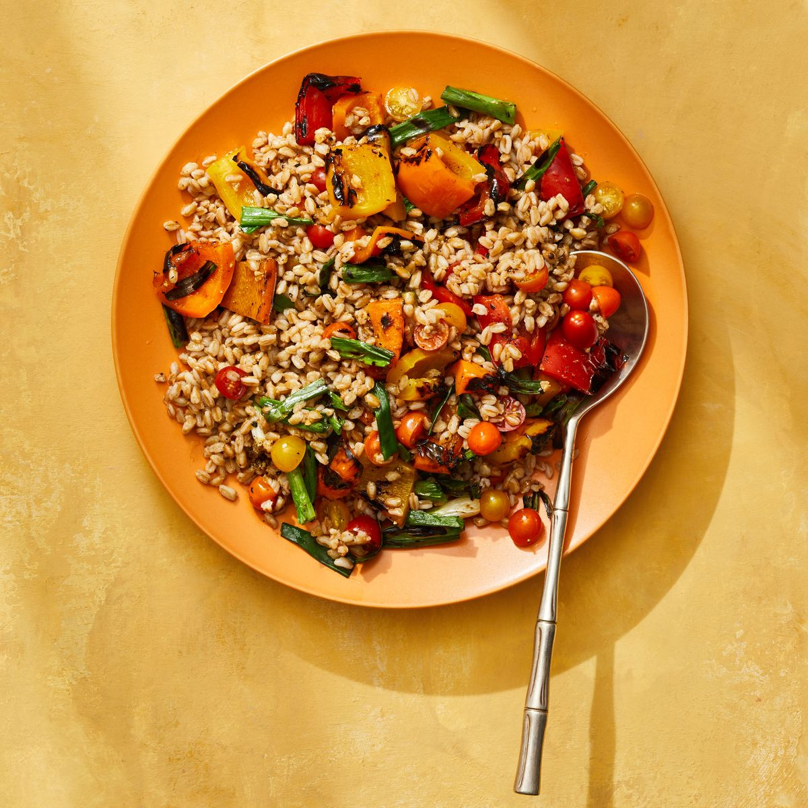

Tomato and Charred Pepper Farro Salad

Description
Grilling season doesn't have to be all burgers and dogs. Throw some peppers and scallions on the fire to add smoky flavor to this potluck-ready salad.
Studded with juicy grape tomatoes and smoky, charred peppers and scallions, this punchy grain salad puts the incredible bounty of summer veggies front and center—and gives you another reason to fire up the grill. For an especially eye-catching dish, look for a variety of colors when selecting your peppers and tomatoes.
Ingredients
- 1 c. pearled farro, rinsed
- 3 peppers (red, yellow, orange), quartered, seeds and stems discarded
- 3 tbsp. plus 1 teaspoon olive oil, divided
- Kosher salt and pepper
- 6 scallions
- 2 tbsp. red wine vinegar
- 1/2 tsp. ground cumin
- 1/4 tsp. red pepper flakes
- 1 pt.grape tomatoes (mixed sizes and colors), chopped
Steps
- Cook farro per package directions. Heat grill to medium-high.
- Meanwhile, in large bowl, toss peppers with 1 teaspoon oil and a pinch each of salt and pepper. Grill until slightly charred, 2 to 3 minutes per side. Meanwhile, grill scallions until charred, 1 to 2 minutes per side. Transfer to cutting board and cut peppers into pieces. Thinly slice 1 inch of each scallion white, then cut remaining greens into 2-inch pieces.
- In same large bowl, whisk together vinegar, cumin, coriander, red pepper flakes, remaining 3 Tbsp oil, and 1/2 tsp each salt and pepper. Add tomatoes, peppers, sliced scallions, and farro and toss to combine. Fold in remaining scallions.